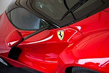

Bienvenido a la pagian de autos
Donde puedes encontrar información sobre tus autos favoritos.
Nissan GT-R

El Nissan GT-R es un automóvil deportivo de alto rendimiento y gran turismo producido por Nissan que fue presentado en 2007. Es el sucesor del Skyline GT-R, aunque ya no forma parte de la gama Skyline en sí, ese nombre ahora se usa para el mercado deportivo de lujo de Nissan
El Nissan GT-R está propulsado por el motor VR38DETT V6, un DOHC V6 de 3,799 cc (3,8 L; 231,8 pulgadas cúbicas) con orificios de cilindro rociados con arco de alambre de plasma transferido. Dos turbocompresores Ishikawajima-Harima (IHI) paralelos proporcionan inducción forzada. Los modelos fabricados entre 2007 y 2009 tienen una potencia de motor declarada por el fabricante de 358 kW (487 PS; 480 hp) a 6.400 rpm y 583 N⋅m (430 lb⋅ft) a 3.200-5.200 rpm. El motor también cumple con los estándares de vehículos de emisiones ultrabajas (ULEV) de la Junta de Recursos del Aire de California.
Tiene un peso en vacío de 1.724 kg (3.800 lb) con airbags laterales de cortina que se logra utilizando un chasis de acero soldado con plantilla con aluminio utilizado para el capó, el maletero y las puertas. Una transmisión semiautomática de doble embrague diseñada por BorgWarner de seis velocidades montada en la parte trasera construida por Aichi Machine Industry que cambia de marcha en solo 0.2 segundos se usa junto con el sistema ATTESA E-TS para proporcionar potencia a las cuatro ruedas, junto con el control de dinámica del vehículo de Nissan. (VDC-R) para ayudar en la estabilidad. También se pueden seleccionar tres modos de cambio para diversas condiciones. El Nissan GT-R cuenta con frenos Brembo de disco flotante de 15 "en las cuatro ruedas con pinzas monobloque (seis pistones en la parte delantera; cuatro pistones en la parte trasera).
Rendimiento

Nissan afirma que el GT-R puede alcanzar una velocidad máxima de 315 km / h (196 mph) y Motor Trend registró una velocidad máxima de 313,8 km / h (195,0 mph). En las pruebas, se demostró que el modelo de producción original era capaz de alcanzar tiempos de 0-97 km / h (60 mph) en tan solo 3,2 segundos utilizando el "control de lanzamiento". Los propietarios expresaron su preocupación de que duplicar los tiempos logrados en estas pruebas anularía la garantía de fábrica. El ingeniero jefe de vehículos de Nissan, Kazutoshi Mizuno, ha indicado que nunca ha utilizado el término "control de lanzamiento", que se refiere al acto de apagar el control dinámico del vehículo (VDC) y lanzar el automóvil a unas 4.500 rpm. Sin embargo, el director de planificación de productos de Nissan, John Wiener, declaró en una entrevista con Jay Leno que "nosotros (Nissan) en realidad ofrecemos un 'modo de lanzamiento'". El manual del usuario del GT-R establece que apagar el VDC solo está diseñado para escapar de situaciones de baja tracción, como barro o nieve. Nissan ha reprogramado el año modelo GT-R 2010 para reducir la velocidad del motor en el lanzamiento a alrededor de 3.000-3.500 rpm con VDC habilitado, lo que está destinado a mejorar los tiempos de aceleración. La nueva programación también se instaló en los vehículos antiguos de 2009 que aún se encuentran en el inventario de Nissan y está disponible para los vehículos de 2009 existentes.
El GT-R actualizado ahora tiene un modo de lanzamiento llamado "R-Mode Start". Al presionar los tres botones hacia arriba, incluye la transmisión, la suspensión y el VDC, el automóvil llega al "R-Mode Start". El sistema permite un máximo de 4 lanzamientos bruscos consecutivos antes de bloquearse solo, después de lo cual se puede desbloquear conduciendo normalmente durante 2,4 km (1,5 mi). La mayor potencia del motor de los modelos posteriores combinada con el "R-Mode Start" ha reducido el tiempo de 0 a 97 km / h (60 mph) a 3,2 segundos. Motor Trend logró un tiempo de un cuarto de milla parado de 11.6 segundos a 190 km / h (120 mph) usando un modelo GT-R 2009 con especificaciones estadounidenses. Autocar logró un tiempo de 0-160 km / h (100 mph) de 8,5 segundos.
El año modelo 2017 GT-R puede acelerar a 97 km / h (60 mph) en el mismo tiempo de 2,7 segundos y lograr un tiempo de 400 m (1⁄4 de mi) de 10,7 segundos a 204 km / h (127 mph). En 2017, la revista automovilística alemana Auto Bild probó la velocidad máxima del año modelo 2017 GT-R y alcanzó una velocidad máxima de 328 km / h (204 mph).
SELECION DEL EDITOR
Ferrari LaFerrari

LaFerrari, nombre del proyecto F150, es un automóvil deportivo híbrido de producción limitada construido por el fabricante italiano de automóviles Ferrari. LaFerrari significa "El Ferrari" en italiano y algunas otras lenguas romances, en el sentido de que es el Ferrari "definitivo".
A partir de 2020, el LaFerrari es el último Ferrari con un motor de 12 cilindros montado en el medio.
Se consideraron nueve estudios de diseño conceptual para el buque insignia híbrido V12 en 2011, reducidos a cinco en abril de 2011 (tres por Ferrari Centro Stile y dos por Pininfarina). De estos, se construyeron dos conceptos de tamaño completo: LaFerrari Concept Manta (designación interna: 2011 Modelo 2) y LaFerrari Concept Tensostruttura (designación interna 2011 Modelo 3). Estos fueron presentados en el Museo Ferrari en Maranello, Italia y Ferrari World en Abu Dhabi. El diseño final del LaFerrari es similar al concepto de Manta (Modelo 2).
Especificaciones
LaFerrari es el primer híbrido suave producido por la marca automotriz italiana, que proporciona la mayor potencia de salida de cualquier automóvil de carretera Ferrari al tiempo que reduce el consumo de combustible en un 40 por ciento. El motor de gasolina de combustión interna de LaFerrari es un motor Ferrari F140 de inyección directa de combustible V12 longitudinalmente trasero montado en el medio con una cilindrada de 6,262 cc (6,3 L) que genera una potencia máxima de 800 PS (588 kW; 789 CV) a 9.000 rpm y 700 N⋅m (516 lb⋅ft) de torque a 6.750 rpm, complementado por una unidad KERS de 163 PS (120 kW; 161 hp) (llamada HY-KERS), que proporciona ráfagas breves de potencia adicional. El sistema KERS agrega potencia adicional al nivel de salida de potencia del motor de combustión para un total de 963 PS (708 kW; 950 hp) y un par combinado de 900 N⋅m (664 lb⋅ft). Ferrari afirma unas emisiones de CO2 de 330 g / km. El diámetro X carrera del motor es de 94 mm × 75,2 mm (3,70 pulg. × 2,96 pulg.) Con una relación de compresión de 13,5: 1 y una potencia específica de 94 kW (128 PS) por litro. Está acoplado a una transmisión de doble embrague de 7 velocidades.
Rendimiento
Ferrari afirma que el coche tiene una velocidad máxima de 350 km / h (220 mph), similar a la velocidad máxima del Enzo. 0–100 km / h (0–62 mph) en menos de 3 segundos, 0–200 km / h (0–124 mph) en menos de 7 segundos y 0–300 km / h (0–186 mph) en 15 segundos fueron anunciados por Ferrari. Ferrari también afirma que el coche superó su circuito de pruebas de Fiorano en 1: 19,70.
AUTOS ELECTRICOS RAPIDOS
Genovation GXE

Se ha logrado un nuevo récord mundial de velocidad máxima en silencio. Eso es porque fue creado por el Genovation GXE, un auto deportivo totalmente eléctrico de más de 800 caballos de fuerza basado en el C7 Corvette.
El automóvil volvió a establecer su récord como el automóvil totalmente eléctrico legal en la calle más rápido del mundo, con una velocidad máxima de 210.2 mph, que supera su marca anterior de 209 mph. La carrera se completó en la pista de tres millas en el Centro Espacial Kennedy en Florida, con el reconocido piloto de pruebas de máxima velocidad Johnny Bohmer al volante. A diferencia de otras carreras recientes a máxima velocidad que no fueron verificadas oficialmente, Genovation trajo a la Asociación Internacional de Carreras de Millas para registrar, presenciar y certificar su logro.
Hacer ese clic extra en el velocímetro requirió algunos cambios notables. Para reducir la resistencia, el alerón trasero gigante se cambió por un alerón de perfil más bajo, un elemento aerodinámico más suave tomó el lugar del divisor de mentón y las paletas del difusor se cortaron en un ángulo más pronunciado. Se modificó el rastrillo y se endurecieron los resortes de suspensión para evitar que la parte delantera del automóvil cayera demasiado a medida que aumentaban las velocidades. La potencia se incrementó en una cantidad no revelada. Se ha logrado un nuevo récord mundial de velocidad máxima en silencio. Eso es porque fue creado por el Genovation GXE, un auto deportivo totalmente eléctrico de más de 800 caballos de fuerza basado en el C7 Corvette.
 El automóvil volvió a establecer su récord como el automóvil totalmente eléctrico legal en la calle más rápido del mundo, con una velocidad máxima de 210.2 mph, que supera su marca anterior de 209 mph. La carrera se completó en la pista de tres millas en el Centro Espacial Kennedy en Florida, con el reconocido piloto de pruebas de máxima velocidad Johnny Bohmer al volante. A diferencia de otras carreras recientes a máxima velocidad que no fueron verificadas oficialmente, Genovation trajo a la Asociación Internacional de Carreras de Millas para registrar, presenciar y certificar su logro.
El automóvil volvió a establecer su récord como el automóvil totalmente eléctrico legal en la calle más rápido del mundo, con una velocidad máxima de 210.2 mph, que supera su marca anterior de 209 mph. La carrera se completó en la pista de tres millas en el Centro Espacial Kennedy en Florida, con el reconocido piloto de pruebas de máxima velocidad Johnny Bohmer al volante. A diferencia de otras carreras recientes a máxima velocidad que no fueron verificadas oficialmente, Genovation trajo a la Asociación Internacional de Carreras de Millas para registrar, presenciar y certificar su logro.
Hacer ese clic extra en el velocímetro requirió algunos cambios notables. Para reducir la resistencia, el alerón trasero gigante se cambió por un alerón de perfil más bajo, un elemento aerodinámico más suave tomó el lugar del divisor de mentón y las paletas del difusor se cortaron en un ángulo más pronunciado. Se modificó el rastrillo y se endurecieron los resortes de suspensión para evitar que la parte delantera del automóvil cayera demasiado a medida que aumentaban las velocidades. La potencia se incrementó en una cantidad no revelada.
AUTO de produccion MAS RAPIDO
Koenigsegg Agera RS

El Koenigsegg Agera RS es actualmente el automóvil de producción más rápido del mundo, con una velocidad máxima oficialmente reconocida de 277,9 mph. El récord se estableció en 2017, rompiendo el récord anterior de 267,9 mph, que tenía el Bugatti Veyron Super Sport desde 2010. Bugatti logró romper la barrera de 300 mph con un Chiron modificado en 2019 con una carrera de 304,774 mph, pero el auto aún no está lista para la producción. También hay una nueva competencia por el primer puesto en la forma de Hennessey Venom F5 y SSC Tuatara de fabricación estadounidense.
Los ingenieros y los pilotos de carreras se han centrado en los récords de velocidad del automóvil durante muchos años y no hay ninguno más grande que el que otorga el título de "automóvil más rápido del mundo". En el pasado, los fabricantes que afirmaban tener el automóvil de producción más rápido del mundo también reclamaban el absoluto récord de velocidad terrestre. Sin embargo, a mediados del siglo XX, las dos listas de poseedores de récords divergieron a medida que los coches récord de velocidad terrestre empezaron a parecer cohetes de carretera, mientras que los coches de producción tenían que adaptarse a la necesidad de pasajeros, equipaje y un precio realista.
 A medida que avanzó la tecnología y se ampliaron las gamas de vehículos, se intensificó la búsqueda del título de automóvil de producción más rápido del mundo. Los primeros contendientes incluyen a Mercedes y Jaguar, mientras que Porsche y Ferrari han tenido una rivalidad intramarca que ha durado más de 50 años, intercalada con ofertas del usurpador Lamborghini.
A medida que avanzó la tecnología y se ampliaron las gamas de vehículos, se intensificó la búsqueda del título de automóvil de producción más rápido del mundo. Los primeros contendientes incluyen a Mercedes y Jaguar, mientras que Porsche y Ferrari han tenido una rivalidad intramarca que ha durado más de 50 años, intercalada con ofertas del usurpador Lamborghini.
En los últimos años, hemos visto a McLaren y Bugatti en juego, mientras que varios fabricantes de hipercoches de nicho también continúan buscando el récord de autos de producción. Los competidores a pequeña escala a menudo hacen afirmaciones audaces de intentos récord de exprimir los depósitos de los posibles compradores, pero por cada Devel Sixteen y Dagger GT de 2.500 bhp, hay un SSC Ultimate Aero o un Hennessy Venom GT: autos que han puesto su dinero donde está su boca.
 Si bien el Agera RS tardó siete años en reclamar el título de Veyron Super Sport, es poco probable que lo conserve durante tanto tiempo como varios autos, incluido el Koenigsegg Jesko de 1,578 bhp, el Hennessey Venom F5 de 1,600 bhp completamente nuevo y el de 1,500 bhp Bugatti Chiron está disparando para la barrera de 300 mph. Este último realmente lo rompió con una carrera de 304.774 mph en la pista de pruebas de Ehra-Lessien en Alemania en 2019; desafortunadamente, el automóvil entrará en producción en 2021 con un precio de alrededor de £ 3.1 millones, por lo que lamentablemente no cuenta, para ahora.
Si bien el Agera RS tardó siete años en reclamar el título de Veyron Super Sport, es poco probable que lo conserve durante tanto tiempo como varios autos, incluido el Koenigsegg Jesko de 1,578 bhp, el Hennessey Venom F5 de 1,600 bhp completamente nuevo y el de 1,500 bhp Bugatti Chiron está disparando para la barrera de 300 mph. Este último realmente lo rompió con una carrera de 304.774 mph en la pista de pruebas de Ehra-Lessien en Alemania en 2019; desafortunadamente, el automóvil entrará en producción en 2021 con un precio de alrededor de £ 3.1 millones, por lo que lamentablemente no cuenta, para ahora.
Actualmente, los neumáticos son el principal factor limitante para los intentos de velocidad máxima de los autos de producción, ya que Bugatti se ve obligado a limitar electrónicamente la velocidad máxima del Chiron a "solo" 261 mph por temor a una explosión a alta velocidad. Sin embargo, la tecnología ha mejorado en los últimos cinco años y se dice que Michelin está desarrollando caucho que puede soportar velocidades de más de 300 mph.
Sobre Nosotros
Bienvenido a la página de autos. Donde podrás encontrar toda la información sobre tus coches favoritos. Aquí encontrará información sobre las especificaciones y el rendimiento de los automóviles, como:
Nissan GTR
Ferrari LaFerrari
Y muchos más. Esté atento a las actualizaciones periódicas en la página web.
PEACE OUT
Contactanos
Contacts
¿Quieres unirtenos? Envíe sus datos aquí y le permitiremos unirse a nuestro equipo
Realizado por Alexander Gonzalez
¿Te gusta lo que ves? Sígueme en mis redes sociales:


Bienvenido a la página de autos. Donde podrás encontrar toda la información sobre tus coches favoritos. Aquí encontrará información sobre las especificaciones y el rendimiento de los automóviles, como:
Nissan GTR
Ferrari LaFerrari
Y muchos más. Esté atento a las actualizaciones periódicas en la página web.
PEACE OUT
Contacts
¿Quieres unirtenos? Envíe sus datos aquí y le permitiremos unirse a nuestro equipo
Realizado por Alexander Gonzalez
¿Te gusta lo que ves? Sígueme en mis redes sociales: